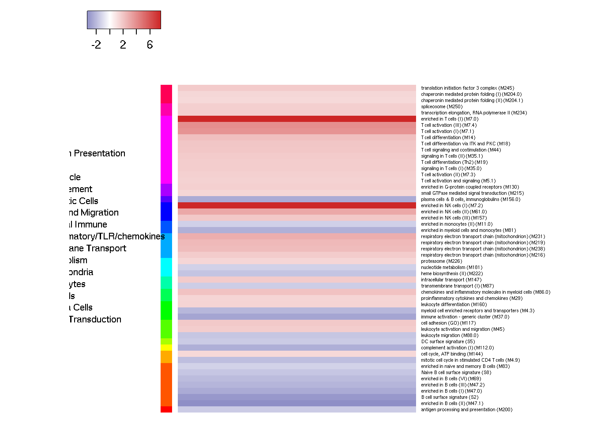
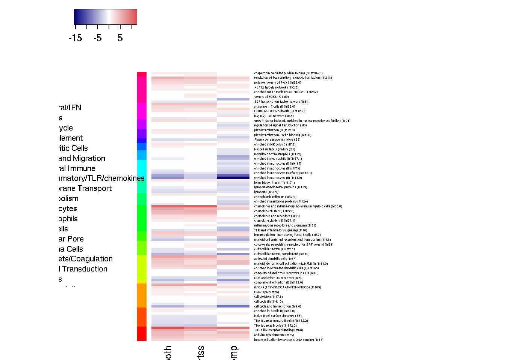
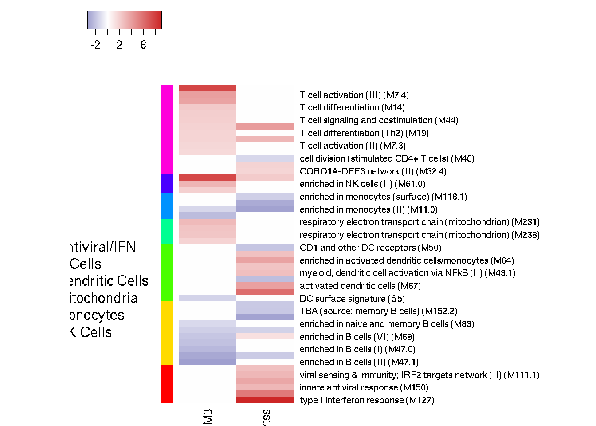
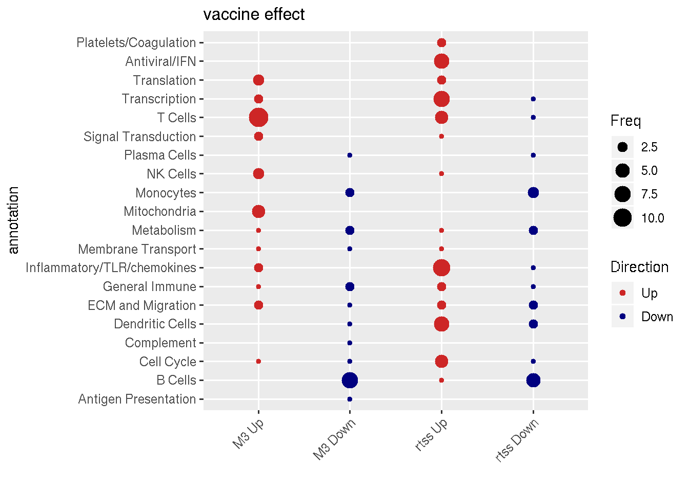

Last updated: 2020-02-07
Checks: 7 0
Knit directory: mal067project/
This reproducible R Markdown analysis was created with workflowr (version 1.6.0). The Checks tab describes the reproducibility checks that were applied when the results were created. The Past versions tab lists the development history.
Great! Since the R Markdown file has been committed to the Git repository, you know the exact version of the code that produced these results.
Great job! The global environment was empty. Objects defined in the global environment can affect the analysis in your R Markdown file in unknown ways. For reproduciblity it’s best to always run the code in an empty environment.
The command set.seed(20181108) was run prior to running the code in the R Markdown file. Setting a seed ensures that any results that rely on randomness, e.g. subsampling or permutations, are reproducible.
Great job! Recording the operating system, R version, and package versions is critical for reproducibility.
Nice! There were no cached chunks for this analysis, so you can be confident that you successfully produced the results during this run.
Great job! Using relative paths to the files within your workflowr project makes it easier to run your code on other machines.
Great! You are using Git for version control. Tracking code development and connecting the code version to the results is critical for reproducibility. The version displayed above was the version of the Git repository at the time these results were generated.
Note that you need to be careful to ensure that all relevant files for the analysis have been committed to Git prior to generating the results (you can use wflow_publish or wflow_git_commit). workflowr only checks the R Markdown file, but you know if there are other scripts or data files that it depends on. Below is the status of the Git repository when the results were generated:
Ignored files:
Ignored: .Rhistory
Ignored: analysis/.Rhistory
Untracked files:
Untracked: Faust_monocyte_boxplot.pdf
Untracked: analysis/DeRosaMonocyteProcessing.Rmd
Untracked: analysis/children/gsea_plot_delta_genes.Rmd
Untracked: analysis/children/stim_GSEA_interaction_case_effect.Rmd
Untracked: analysis/children/stim_GSEA_interaction_mono_effect.Rmd
Untracked: analysis/children/stim_GSEA_main_mono_effect.Rmd
Untracked: analysis/primary_interaction_mono_AMA.Rmd
Untracked: analysis/primary_interaction_mono_CSP.Rmd
Untracked: analysis/primary_interaction_mono_HBS.Rmd
Untracked: analysis/primary_main_M0_AMA.Rmd
Untracked: analysis/primary_main_M0_DMSO_bak.Rmd
Untracked: analysis/primary_main_mono_AMA.Rmd
Untracked: analysis/primary_main_mono_CSP.Rmd
Untracked: analysis/primary_main_mono_DMSO.Rmd
Untracked: analysis/primary_main_mono_HBS.Rmd
Untracked: analysis/process_deltas.Rmd
Untracked: analysis/secondary_covariates.Rmd
Untracked: code/ARDAP1_transcript.Rmd
Untracked: code/mal_utilities.R
Untracked: cor_table.RDS
Untracked: data/.~lock.170830-RTSS case control phenotyping.txt#
Untracked: data/170830-RTSS case control phenotyping.txt
Untracked: data/BTM_for_GSEA_20131008.gmt
Untracked: data/CD4_CSP_PFS.rds
Untracked: data/CD4_HBS_PFS.rds
Untracked: data/CD8_CSP_PFS.rds
Untracked: data/CD8_HBS_PFS.rds
Untracked: data/CiberSort_RTSS.csv
Untracked: data/DeRosaMonocyteFrequencies.csv
Untracked: data/ICS_Primary_MAL067.pptx
Untracked: data/PRIMARY_CD4_MAGNITUDE.rds
Untracked: data/Pulendran_GSEA_disease.csv
Untracked: data/RTSSPilotRNA-seqSAP_v4.pdf
Untracked: data/Vahey_GSEA_disease.csv
Untracked: data/btm_annotation_table.tsv
Untracked: data/btm_annotation_table_LNC.csv
Untracked: data/btm_annotation_table_LNC.ods
Untracked: data/faustOutputAllRtss_v02.csv
Untracked: data/ics_extra_vars_20180515.csv
Untracked: data/long_dis_DupCor.csv
Untracked: data/long_vac_DupCor.csv
Untracked: data/m067_seattle_data.RData
Untracked: data/phenoLineagePctLive.txt
Untracked: data/visit_DupCor.csv
Untracked: output/DMSO_M3_vaccine_disease_interaction.csv
Untracked: output/DMSO_M3_vaccine_disease_interaction_DEG.csv
Untracked: output/Fig2A_vaccine_both_dmso_M3.csv
Untracked: output/Fig2B_M3-M0_rtss.csv
Untracked: output/Fig3A_M3_case_control.csv
Untracked: output/Fig3B_M3-M0_rtss.csv
Untracked: output/GSEA_M0_ama1_vac_dis.csv
Untracked: output/GSEA_M0_csp_vac_dis.csv
Untracked: output/GSEA_M0_hbs_vac_dis.csv
Untracked: output/GSEA_M3_ama1_vac_dis.csv
Untracked: output/GSEA_M3_ama1_vac_dis_case.csv
Untracked: output/GSEA_M3_csp_vac_dis.csv
Untracked: output/GSEA_M3_hbs_vac_dis.csv
Untracked: output/M3-M0_both.csv
Untracked: output/M3-M0_by_vaccine.csv
Untracked: output/M3-M0_comp.csv
Untracked: output/M3-M0_disease_mal.csv
Untracked: output/M3-M0_disease_mal_comp.csv
Untracked: output/M3-M0_disease_mal_rtss.csv
Untracked: output/M3-M0_disease_nomal_comp.csv
Untracked: output/M3-M0_disease_nomal_rtss.csv
Untracked: output/M3-M0_rtss.csv
Untracked: output/M3_dmso_vaccine.csv
Untracked: output/cell_dist_mediods
Untracked: output/cibersort_cells.csv
Untracked: output/cibersort_cells.pdf
Untracked: output/disease_both_ama1_M0.csv
Untracked: output/disease_both_dmso_M0.csv
Untracked: output/disease_both_dmso_M3.csv
Untracked: output/disease_comp_dmso_M3.csv
Untracked: output/disease_ds_both_ama1_M0.csv
Untracked: output/disease_ds_both_dmso_M0.csv
Untracked: output/disease_ds_both_dmso_M3.csv
Untracked: output/disease_rtss_dmso_M3.csv
Untracked: output/dmso_M0_both_disease.csv
Untracked: output/dmso_M0_old_disease.csv
Untracked: output/dmso_M3_both_disease.csv
Untracked: output/dmso_M3_old_disease.csv
Untracked: output/dmso_M3_young_disease.csv
Untracked: output/figures/
Untracked: output/manuscript/
Untracked: output/sig_dis_genes_david.csv
Untracked: output/stim_deltas.rds
Untracked: output/stim_deltas_cpm_unlogged.rds
Untracked: output/vaccine_both_ama1_M0.csv
Untracked: output/vaccine_both_dmso_M0.csv
Untracked: output/vaccine_both_dmso_M3.csv
Untracked: secondary_faust.html
Untracked: test.pdf
Unstaged changes:
Modified: analysis/analysis_DMSO_M3_GSEA.Rmd
Modified: analysis/analysis_GSEA_M3_stimulations.Rmd
Modified: analysis/children/stim_GSEA_interaction_effect.Rmd
Modified: analysis/children/stim_GSEA_main_effect.Rmd
Modified: analysis/combine_GSEA.Rmd
Modified: analysis/experimental_design.Rmd
Modified: analysis/exploratory_ML_ratio.Rmd
Modified: analysis/exploratory_antibody.Rmd
Modified: analysis/exploratory_heno_gene_expression_disease_protection.Rmd
Modified: analysis/exploratory_monocyte_derosa.Rmd
Modified: analysis/index.Rmd
Modified: analysis/primary_Bagamoyo_GSEA.Rmd
Modified: analysis/primary_interaction_M3_AMA.Rmd
Modified: analysis/primary_main_M0_DMSO.Rmd
Modified: analysis/primary_main_M3_DMSO.Rmd
Deleted: analysis/secondary_disease_all_samples.Rmd
Modified: analysis/secondary_faust.Rmd
Note that any generated files, e.g. HTML, png, CSS, etc., are not included in this status report because it is ok for generated content to have uncommitted changes.
These are the previous versions of the R Markdown and HTML files. If you’ve configured a remote Git repository (see ?wflow_git_remote), click on the hyperlinks in the table below to view them.
| File | Version | Author | Date | Message |
|---|---|---|---|---|
| Rmd | dd65764 | carlmurie | 2020-02-07 | wflow_publish(“analysis/manuscript*.Rmd“) |
vaccine linear model: ~plate + total_reads + age + vaccine
coefficient: vaccinertss
vaccine filtering : M3
| total | comparator | rtss | control | case | neither | young | old | |
|---|---|---|---|---|---|---|---|---|
| dmso | 349 | 131 | 218 | 140 | 53 | 156 | 129 | 220 |
| geneset | NGenes | Direction | PValue | FDR |
|---|---|---|---|---|
| enriched in T cells (I) (M7.0) | 56 | Up | 0.0000000 | 0.0000039 |
| enriched in NK cells (I) (M7.2) | 45 | Up | 0.0000000 | 0.0000039 |
| T cell activation (III) (M7.4) | 13 | Up | 0.0001154 | 0.0094920 |
| T cell activation (I) (M7.1) | 47 | Up | 0.0001699 | 0.0094920 |
| TBA (M72.0) | 21 | Up | 0.0001791 | 0.0094920 |
| enriched in B cells (II) (M47.1) | 32 | Down | 0.0004283 | 0.0189200 |
| TBA (M174) | 22 | Up | 0.0008051 | 0.0278100 |
| B cell surface signature (S2) | 70 | Down | 0.0009061 | 0.0278100 |
| enriched in NK cells (II) (M61.0) | 13 | Up | 0.0009445 | 0.0278100 |
| enriched for ubiquitination (M138) | 11 | Up | 0.0014190 | 0.0360300 |
| respiratory electron transport chain (mitochondrion) (M231) | 11 | Up | 0.0014960 | 0.0360300 |
| immune activation - generic cluster (M37.0) | 210 | Down | 0.0021740 | 0.0480200 |
| TBA (M211) | 10 | Up | 0.0023870 | 0.0486500 |
| plasma cells & B cells, immunoglobulins (M156.0) | 17 | Down | 0.0033960 | 0.0602200 |
| enriched in B cells (I) (M47.0) | 39 | Down | 0.0034090 | 0.0602200 |
| respiratory electron transport chain (mitochondrion) (M219) | 18 | Up | 0.0036810 | 0.0609700 |
| TBA (M203) | 13 | Up | 0.0040670 | 0.0613600 |
| complement activation (I) (M112.0) | 10 | Down | 0.0043570 | 0.0613600 |
| respiratory electron transport chain (mitochondrion) (M238) | 17 | Up | 0.0046000 | 0.0613600 |
| enriched in myeloid cells and monocytes (M81) | 23 | Down | 0.0046310 | 0.0613600 |
| T cell differentiation (M14) | 12 | Up | 0.0059470 | 0.0750500 |
| enriched in B cells (III) (M47.2) | 22 | Down | 0.0067310 | 0.0810700 |
| chemokines and inflammatory molecules in myeloid cells (M86.0) | 17 | Up | 0.0074430 | 0.0857500 |
| myeloid cell enriched receptors and transporters (M4.3) | 26 | Down | 0.0077820 | 0.0859300 |
| T cell differentiation via ITK and PKC (M18) | 11 | Up | 0.0102200 | 0.1075000 |
| enriched in B cells (VI) (M69) | 18 | Down | 0.0105500 | 0.1075000 |
| T cell signaling and costimulation (M44) | 10 | Up | 0.0112200 | 0.1102000 |
| TBA (M185) | 14 | Up | 0.0119300 | 0.1107000 |
| enriched in NK cells (III) (M157) | 13 | Up | 0.0123100 | 0.1107000 |
| mitotic cell cycle in stimulated CD4 T cells (M4.9) | 13 | Down | 0.0125300 | 0.1107000 |
| cell adhesion (GO) (M117) | 20 | Up | 0.0134300 | 0.1148000 |
| TBA (M201) | 14 | Down | 0.0144600 | 0.1161000 |
| signaling in T cells (II) (M35.1) | 10 | Up | 0.0148200 | 0.1161000 |
| translation initiation factor 3 complex (M245) | 11 | Up | 0.0148900 | 0.1161000 |
| intracellular transport (M147) | 17 | Up | 0.0154200 | 0.1168000 |
| TBA (M72.1) | 16 | Up | 0.0163500 | 0.1179000 |
| respiratory electron transport chain (mitochondrion) (M216) | 12 | Up | 0.0166700 | 0.1179000 |
| T cell differentiation (Th2) (M19) | 15 | Up | 0.0173600 | 0.1179000 |
| signaling in T cells (I) (M35.0) | 13 | Up | 0.0173600 | 0.1179000 |
| chromosome Y linked (M240) | 9 | Up | 0.0182300 | 0.1193000 |
| leukocyte activation and migration (M45) | 11 | Up | 0.0184500 | 0.1193000 |
| heme biosynthesis (II) (M222) | 10 | Down | 0.0191200 | 0.1206000 |
| leukocyte migration (M88.0) | 12 | Down | 0.0207600 | 0.1229000 |
| spliceosome (M250) | 12 | Up | 0.0215600 | 0.1229000 |
| Naive B cell surface signature (S8) | 24 | Down | 0.0216200 | 0.1229000 |
| transcription elongation, RNA polymerase II (M234) | 13 | Up | 0.0217800 | 0.1229000 |
| TBA (M194) | 13 | Up | 0.0217900 | 0.1229000 |
| T cell activation (II) (M7.3) | 29 | Up | 0.0233100 | 0.1275000 |
| enriched in G-protein coupled receptors (M130) | 10 | Up | 0.0235700 | 0.1275000 |
| T cell activation and signaling (M5.1) | 22 | Up | 0.0268800 | 0.1424000 |
| antigen processing and presentation (M200) | 6 | Down | 0.0302800 | 0.1547000 |
| DC surface signature (S5) | 54 | Down | 0.0304700 | 0.1547000 |
| leukocyte differentiation (M160) | 14 | Up | 0.0320200 | 0.1547000 |
| TBA (M229) | 10 | Up | 0.0320400 | 0.1547000 |
| TBA (M205) | 11 | Up | 0.0321200 | 0.1547000 |
| transmembrane transport (I) (M87) | 19 | Down | 0.0340400 | 0.1595000 |
| proinflammatory cytokines and chemokines (M29) | 9 | Up | 0.0343100 | 0.1595000 |
| proteasome (M226) | 12 | Up | 0.0360900 | 0.1649000 |
| small GTPase mediated signal transduction (M215) | 16 | Up | 0.0381500 | 0.1714000 |
| chaperonin mediated protein folding (I) (M204.0) | 14 | Up | 0.0402300 | 0.1777000 |
| enriched in monocytes (II) (M11.0) | 146 | Down | 0.0422200 | 0.1834000 |
| cell cycle, ATP binding (M144) | 16 | Up | 0.0435000 | 0.1859000 |
| nucleotide metabolism (M181) | 9 | Down | 0.0465700 | 0.1922000 |
| TBA (M137) | 15 | Up | 0.0472200 | 0.1922000 |
| enriched in naive and memory B cells (M83) | 9 | Down | 0.0476900 | 0.1922000 |
| chaperonin mediated protein folding (II) (M204.1) | 10 | Up | 0.0478700 | 0.1922000 |

Only Bagamoya samples with the dmso stimulation are used. A consequence of this is that only subjects from the old age group are included. Additionally only paired samples by subject are included.
| total | comparator | rtss | X0 | X1 | young | old | M0 | M3 | control | case | neither | |
|---|---|---|---|---|---|---|---|---|---|---|---|---|
| dmso | 222 | 70 | 152 | 194 | 28 | 0 | 222 | 111 | 111 | 81 | 26 | 115 |
formula: ~plate + total_reads + pid + visit
coefficient: visitM3
| geneset | NGenes | Direction | PValue | FDR |
|---|---|---|---|---|
| type I interferon response (M127) | 12 | Up | 0.000 | 0.000 |
| chemokines and inflammatory molecules in myeloid cells (M86.0) | 17 | Up | 0.000 | 0.000 |
| enriched in monocytes (II) (M11.0) | 146 | Down | 0.000 | 0.000 |
| proinflammatory dendritic cell, myeloid cell response (M86.1) | 11 | Up | 0.000 | 0.000 |
| cytokines - recepters cluster (M115) | 10 | Up | 0.000 | 0.000 |
| RIG-1 like receptor signaling (M68) | 10 | Up | 0.000 | 0.000 |
| cell cycle and growth arrest (M31) | 11 | Up | 0.000 | 0.000 |
| regulation of transcription, transcription factors (M213) | 17 | Up | 0.000 | 0.000 |
| Monocyte surface signature (S4) | 69 | Down | 0.000 | 0.000 |
| chemokine cluster (I) (M27.0) | 20 | Up | 0.000 | 0.000 |
| innate antiviral response (M150) | 12 | Up | 0.000 | 0.000 |
| cell cycle and transcription (M4.0) | 226 | Down | 0.000 | 0.000 |
| proinflammatory cytokines and chemokines (M29) | 9 | Up | 0.000 | 0.000 |
| antiviral IFN signature (M75) | 19 | Up | 0.000 | 0.000 |
| activated dendritic cells (M67) | 9 | Up | 0.000 | 0.000 |
| extracellular matrix, complement (M140) | 7 | Down | 0.000 | 0.000 |
| signaling in T cells (II) (M35.1) | 10 | Up | 0.000 | 0.001 |
| Resting dendritic cell surface signature (S10) | 43 | Down | 0.000 | 0.001 |
| viral sensing & immunity; IRF2 targets network (II) (M111.1) | 11 | Up | 0.000 | 0.001 |
| myeloid, dendritic cell activation via NFkB (II) (M43.1) | 13 | Up | 0.000 | 0.001 |
| leukocyte differentiation (M160) | 14 | Up | 0.000 | 0.001 |
| myeloid, dendritic cell activation via NFkB (I) (M43.0) | 12 | Up | 0.000 | 0.002 |
| myeloid cell enriched receptors and transporters (M4.3) | 26 | Down | 0.000 | 0.002 |
| putative targets of PAX3 (M89.1) | 9 | Up | 0.000 | 0.003 |
| TBA (M72.0) | 21 | Up | 0.000 | 0.004 |
| immuregulation - monocytes, T and B cells (M57) | 10 | Up | 0.000 | 0.005 |
| TBA (M72.1) | 16 | Up | 0.001 | 0.005 |
| enriched in activated dendritic cells/monocytes (M64) | 17 | Up | 0.001 | 0.005 |
| TBA (M121) | 10 | Up | 0.001 | 0.006 |
| innate activation by cytosolic DNA sensing (M13) | 11 | Up | 0.001 | 0.007 |
| TBA (M190) | 10 | Up | 0.001 | 0.008 |
| putative targets of PAX3 (M89.0) | 12 | Up | 0.001 | 0.011 |
| signaling in T cells (I) (M35.0) | 13 | Up | 0.001 | 0.011 |
| TBA (source: B cells) (M152.0) | 6 | Down | 0.002 | 0.014 |
| growth factor induced, enriched in nuclear receptor subfamily 4 (M94) | 7 | Up | 0.002 | 0.018 |
| enriched in monocytes (surface) (M118.1) | 17 | Down | 0.003 | 0.019 |
| TBA (M174) | 22 | Up | 0.003 | 0.021 |
| CORO1A-DEF6 network (II) (M32.4) | 13 | Up | 0.004 | 0.025 |
| TBA (M72.2) | 12 | Up | 0.004 | 0.025 |
| chemokines and receptors (M38) | 11 | Up | 0.004 | 0.025 |
| TBA (M177.1) | 10 | Down | 0.004 | 0.025 |
| Plasma cell surface signature (S3) | 10 | Down | 0.005 | 0.028 |
| TBA (M203) | 13 | Up | 0.005 | 0.028 |
| enriched in activated dendritic cells (II) (M165) | 29 | Up | 0.005 | 0.028 |
| lysosome (M209) | 7 | Down | 0.005 | 0.028 |
| TLR and inflammatory signaling (M16) | 34 | Down | 0.005 | 0.028 |
| TBA (M194) | 13 | Up | 0.005 | 0.028 |
| CD1 and other DC receptors (M50) | 6 | Down | 0.005 | 0.028 |
| cell activation (IL15, IL23, TNF) (M24) | 12 | Up | 0.005 | 0.028 |
| immune activation - generic cluster (M37.0) | 210 | Down | 0.007 | 0.037 |
| proteasome (M226) | 12 | Up | 0.007 | 0.038 |
| CORO1A-DEF6 network (I) (M32.2) | 17 | Up | 0.008 | 0.039 |
| B cell surface signature (S2) | 70 | Down | 0.008 | 0.040 |
| TBA (M104) | 6 | Up | 0.010 | 0.047 |
| TBA (M141) | 7 | Down | 0.010 | 0.048 |
| glycerophospholipid metabolism (M114.1) | 10 | Down | 0.011 | 0.050 |
| mitosis (TF motif CCAATNNSNNNGCG) (M169) | 14 | Up | 0.011 | 0.051 |
| TBA (source: memory B cells) (M152.2) | 6 | Down | 0.012 | 0.054 |
| leukocyte migration (M88.0) | 12 | Down | 0.013 | 0.058 |
| platelet activation (I) (M32.0) | 20 | Up | 0.015 | 0.066 |
| enriched in NK cells (I) (M7.2) | 45 | Up | 0.016 | 0.066 |
| enriched for TF motif PAX3 (M179) | 8 | Up | 0.016 | 0.066 |
| enriched in monocytes (IV) (M118.0) | 48 | Down | 0.016 | 0.066 |
| TBA (M229) | 10 | Up | 0.017 | 0.071 |
| extracellular matrix (II) (M2.1) | 18 | Down | 0.018 | 0.072 |
| TBA (M32.6) | 12 | Up | 0.018 | 0.072 |
| Memory B cell surface signature (S9) | 13 | Down | 0.018 | 0.073 |
| E2F transcription factor network (M8) | 7 | Down | 0.022 | 0.087 |
| complement activation (I) (M112.0) | 10 | Down | 0.023 | 0.090 |
| TBA (M32.7) | 10 | Up | 0.025 | 0.093 |
| TBA (M120) | 11 | Up | 0.025 | 0.093 |
| intracellular transport (M147) | 17 | Up | 0.025 | 0.093 |
| Naive B cell surface signature (S8) | 24 | Down | 0.028 | 0.101 |
| TBA (M80) | 12 | Up | 0.028 | 0.101 |
| cell division (stimulated CD4+ T cells) (M46) | 13 | Down | 0.029 | 0.101 |
| TBA (M137) | 15 | Up | 0.030 | 0.104 |
| platelet activation (II) (M32.1) | 20 | Up | 0.033 | 0.114 |
| TBA (M242) | 11 | Up | 0.035 | 0.120 |
| cell cycle (I) (M4.1) | 89 | Down | 0.037 | 0.124 |
| transmembrane transport (I) (M87) | 19 | Down | 0.038 | 0.125 |
| chaperonin mediated protein folding (I) (M204.0) | 14 | Up | 0.039 | 0.126 |
| chemokine cluster (II) (M27.1) | 13 | Up | 0.040 | 0.128 |
| cell cycle, ATP binding (M144) | 16 | Up | 0.041 | 0.130 |
| enriched in neutrophils (I) (M37.1) | 29 | Down | 0.042 | 0.133 |
| KLF12 targets network (M32.3) | 15 | Up | 0.049 | 0.152 |
| enriched in B cells (VI) (M69) | 18 | Up | 0.050 | 0.153 |
| AP-1 transcription factor network (M20) | 13 | Up | 0.050 | 0.154 |
| TBA (M153) | 15 | Up | 0.056 | 0.169 |
| lysosomal/endosomal proteins (M139) | 10 | Down | 0.058 | 0.172 |
| DNA repair (M76) | 19 | Up | 0.059 | 0.173 |
| enriched in B cells (I) (M47.0) | 39 | Up | 0.061 | 0.177 |
| TBA (M32.5) | 14 | Up | 0.062 | 0.177 |
| TBA (M180) | 11 | Up | 0.062 | 0.177 |
| enriched in cell cycle (M167) | 14 | Up | 0.064 | 0.179 |
| TBA (M131) | 12 | Up | 0.064 | 0.179 |
| regulation of localization (GO) (M63) | 11 | Up | 0.066 | 0.184 |
| enriched in NK cells (III) (M157) | 13 | Up | 0.070 | 0.190 |
| nuclear pore, transport; mRNA splicing, processing (M143) | 11 | Up | 0.073 | 0.198 |
| geneset | NGenes | Direction | PValue | FDR |
|---|---|---|---|---|
| chemokines and inflammatory molecules in myeloid cells (M86.0) | 17 | Up | 0.000 | 0.000 |
| type I interferon response (M127) | 12 | Up | 0.000 | 0.000 |
| cell cycle and growth arrest (M31) | 11 | Up | 0.000 | 0.000 |
| proinflammatory dendritic cell, myeloid cell response (M86.1) | 11 | Up | 0.000 | 0.000 |
| chemokine cluster (I) (M27.0) | 20 | Up | 0.000 | 0.000 |
| RIG-1 like receptor signaling (M68) | 10 | Up | 0.000 | 0.000 |
| cytokines - recepters cluster (M115) | 10 | Up | 0.000 | 0.000 |
| proinflammatory cytokines and chemokines (M29) | 9 | Up | 0.000 | 0.000 |
| regulation of transcription, transcription factors (M213) | 17 | Up | 0.000 | 0.001 |
| signaling in T cells (II) (M35.1) | 10 | Up | 0.000 | 0.002 |
| activated dendritic cells (M67) | 9 | Up | 0.000 | 0.003 |
| enriched in activated dendritic cells/monocytes (M64) | 17 | Up | 0.000 | 0.004 |
| antiviral IFN signature (M75) | 19 | Up | 0.000 | 0.005 |
| TBA (M203) | 13 | Up | 0.000 | 0.006 |
| leukocyte differentiation (M160) | 14 | Up | 0.000 | 0.006 |
| TBA (M121) | 10 | Up | 0.001 | 0.008 |
| TBA (M72.0) | 21 | Up | 0.001 | 0.008 |
| enriched in monocytes (II) (M11.0) | 146 | Down | 0.001 | 0.008 |
| TBA (M72.1) | 16 | Up | 0.001 | 0.008 |
| TBA (source: B cells) (M152.0) | 6 | Down | 0.001 | 0.008 |
| putative targets of PAX3 (M89.0) | 12 | Up | 0.001 | 0.009 |
| putative targets of PAX3 (M89.1) | 9 | Up | 0.001 | 0.009 |
| signaling in T cells (I) (M35.0) | 13 | Up | 0.001 | 0.012 |
| viral sensing & immunity; IRF2 targets network (II) (M111.1) | 11 | Up | 0.001 | 0.012 |
| innate antiviral response (M150) | 12 | Up | 0.001 | 0.012 |
| Monocyte surface signature (S4) | 69 | Down | 0.001 | 0.012 |
| TBA (M190) | 10 | Up | 0.001 | 0.012 |
| TBA (M174) | 22 | Up | 0.001 | 0.012 |
| immuregulation - monocytes, T and B cells (M57) | 10 | Up | 0.002 | 0.017 |
| myeloid, dendritic cell activation via NFkB (II) (M43.1) | 13 | Up | 0.002 | 0.020 |
| cell cycle and transcription (M4.0) | 226 | Down | 0.003 | 0.022 |
| growth factor induced, enriched in nuclear receptor subfamily 4 (M94) | 7 | Up | 0.003 | 0.022 |
| innate activation by cytosolic DNA sensing (M13) | 11 | Up | 0.003 | 0.022 |
| extracellular matrix, complement (M140) | 7 | Down | 0.003 | 0.022 |
| enriched in activated dendritic cells (II) (M165) | 29 | Up | 0.003 | 0.022 |
| chemokines and receptors (M38) | 11 | Up | 0.003 | 0.023 |
| TBA (M177.1) | 10 | Down | 0.003 | 0.023 |
| myeloid, dendritic cell activation via NFkB (I) (M43.0) | 12 | Up | 0.004 | 0.026 |
| TBA (M131) | 12 | Up | 0.004 | 0.030 |
| Resting dendritic cell surface signature (S10) | 43 | Down | 0.005 | 0.035 |
| myeloid cell enriched receptors and transporters (M4.3) | 26 | Down | 0.006 | 0.035 |
| TBA (M72.2) | 12 | Up | 0.006 | 0.035 |
| TBA (M141) | 7 | Down | 0.007 | 0.042 |
| lysosome (M209) | 7 | Down | 0.008 | 0.046 |
| enriched in NK cells (I) (M7.2) | 45 | Up | 0.008 | 0.046 |
| TBA (M194) | 13 | Up | 0.008 | 0.048 |
| Plasma cell surface signature (S3) | 10 | Down | 0.009 | 0.048 |
| TBA (M229) | 10 | Up | 0.009 | 0.050 |
| CD1 and other DC receptors (M50) | 6 | Down | 0.010 | 0.053 |
| TBA (source: memory B cells) (M152.2) | 6 | Down | 0.013 | 0.067 |
| TBA (M180) | 11 | Up | 0.013 | 0.067 |
| proteasome (M226) | 12 | Up | 0.014 | 0.069 |
| Memory B cell surface signature (S9) | 13 | Down | 0.014 | 0.069 |
| cell activation (IL15, IL23, TNF) (M24) | 12 | Up | 0.015 | 0.072 |
| CORO1A-DEF6 network (I) (M32.2) | 17 | Up | 0.015 | 0.074 |
| B cell surface signature (S2) | 70 | Down | 0.016 | 0.076 |
| enriched in cell cycle (M167) | 14 | Up | 0.017 | 0.077 |
| AP-1 transcription factor network (M20) | 13 | Up | 0.017 | 0.079 |
| TBA (M104) | 6 | Up | 0.017 | 0.079 |
| TBA (M32.6) | 12 | Up | 0.019 | 0.083 |
| CORO1A-DEF6 network (II) (M32.4) | 13 | Up | 0.019 | 0.083 |
| leukocyte migration (M88.0) | 12 | Down | 0.020 | 0.084 |
| chemokine cluster (II) (M27.1) | 13 | Up | 0.021 | 0.088 |
| enriched in monocytes (surface) (M118.1) | 17 | Down | 0.022 | 0.091 |
| E2F transcription factor network (M8) | 7 | Down | 0.023 | 0.092 |
| Naive B cell surface signature (S8) | 24 | Down | 0.026 | 0.106 |
| platelet activation (I) (M32.0) | 20 | Up | 0.027 | 0.107 |
| platelet activation (II) (M32.1) | 20 | Up | 0.032 | 0.121 |
| TBA (M242) | 11 | Up | 0.032 | 0.121 |
| TBA (M137) | 15 | Up | 0.034 | 0.128 |
| spliceosome (M250) | 12 | Up | 0.035 | 0.130 |
| enriched for TF motif PAX3 (M179) | 8 | Up | 0.036 | 0.132 |
| cytoskeletal remodeling (enriched for SRF targets) (M34) | 8 | Up | 0.037 | 0.135 |
| targets of FOSL1/2 (M0) | 7 | Up | 0.038 | 0.136 |
| chaperonin mediated protein folding (I) (M204.0) | 14 | Up | 0.040 | 0.142 |
| intracellular transport (M147) | 17 | Up | 0.041 | 0.142 |
| cell division (stimulated CD4+ T cells) (M46) | 13 | Down | 0.041 | 0.142 |
| cell adhesion (M51) | 8 | Up | 0.044 | 0.151 |
| TLR and inflammatory signaling (M16) | 34 | Down | 0.047 | 0.157 |
| enriched in B cells (VI) (M69) | 18 | Up | 0.055 | 0.181 |
| mitosis (TF motif CCAATNNSNNNGCG) (M169) | 14 | Up | 0.060 | 0.192 |
| cell cycle, ATP binding (M144) | 16 | Up | 0.061 | 0.192 |
| TBA (M80) | 12 | Up | 0.062 | 0.192 |
| glycerophospholipid metabolism (M114.1) | 10 | Down | 0.062 | 0.192 |
| regulation of localization (GO) (M63) | 11 | Up | 0.062 | 0.192 |
| inflammasome receptors and signaling (M53) | 9 | Up | 0.063 | 0.192 |
| TBA (M32.7) | 10 | Up | 0.063 | 0.192 |
| chaperonin mediated protein folding (II) (M204.1) | 10 | Up | 0.064 | 0.194 |
| geneset | NGenes | Direction | PValue | FDR |
|---|---|---|---|---|
| enriched in monocytes (II) (M11.0) | 146 | Down | 0.000 | 0.000 |
| type I interferon response (M127) | 12 | Up | 0.000 | 0.000 |
| Monocyte surface signature (S4) | 69 | Down | 0.000 | 0.000 |
| cell cycle and transcription (M4.0) | 226 | Down | 0.000 | 0.000 |
| extracellular matrix, complement (M140) | 7 | Down | 0.000 | 0.000 |
| Resting dendritic cell surface signature (S10) | 43 | Down | 0.000 | 0.000 |
| myeloid cell enriched receptors and transporters (M4.3) | 26 | Down | 0.000 | 0.000 |
| formyl peptide receptor mediated neutrophil response (M11.2) | 8 | Down | 0.000 | 0.000 |
| innate antiviral response (M150) | 12 | Up | 0.000 | 0.000 |
| myeloid, dendritic cell activation via NFkB (I) (M43.0) | 12 | Up | 0.000 | 0.000 |
| transcription regulation in cell development (M49) | 37 | Down | 0.000 | 0.000 |
| myeloid, dendritic cell activation via NFkB (II) (M43.1) | 13 | Up | 0.000 | 0.000 |
| enriched in neutrophils (I) (M37.1) | 29 | Down | 0.000 | 0.001 |
| TLR and inflammatory signaling (M16) | 34 | Down | 0.000 | 0.001 |
| cytokines - recepters cluster (M115) | 10 | Up | 0.000 | 0.002 |
| inflammatory response (M33) | 8 | Down | 0.000 | 0.003 |
| enriched in monocytes (surface) (M118.1) | 17 | Down | 0.000 | 0.003 |
| complement and other receptors in DCs (M40) | 11 | Down | 0.000 | 0.004 |
| immune activation - generic cluster (M37.0) | 210 | Down | 0.000 | 0.004 |
| antiviral IFN signature (M75) | 19 | Up | 0.000 | 0.005 |
| viral sensing & immunity; IRF2 targets network (II) (M111.1) | 11 | Up | 0.000 | 0.005 |
| extracellular matrix (II) (M2.1) | 18 | Down | 0.001 | 0.006 |
| transmembrane transport (I) (M87) | 19 | Down | 0.001 | 0.006 |
| regulation of transcription, transcription factors (M213) | 17 | Up | 0.001 | 0.007 |
| TBA (M66) | 17 | Down | 0.001 | 0.009 |
| platelet activation and degranulation (M85) | 8 | Down | 0.001 | 0.011 |
| proinflammatory dendritic cell, myeloid cell response (M86.1) | 11 | Up | 0.001 | 0.012 |
| RIG-1 like receptor signaling (M68) | 10 | Up | 0.002 | 0.015 |
| enriched in monocytes (IV) (M118.0) | 48 | Down | 0.002 | 0.016 |
| activated dendritic cells (M67) | 9 | Up | 0.002 | 0.017 |
| enriched in monocytes (I) (M4.15) | 8 | Down | 0.002 | 0.017 |
| leukocyte differentiation (M160) | 14 | Up | 0.002 | 0.017 |
| enriched in membrane proteins (M124) | 13 | Down | 0.002 | 0.018 |
| heme biosynthesis (II) (M222) | 10 | Down | 0.002 | 0.018 |
| CORO1A-DEF6 network (II) (M32.4) | 13 | Up | 0.002 | 0.018 |
| regulation of signal transduction (M3) | 33 | Down | 0.003 | 0.022 |
| mitosis (TF motif CCAATNNSNNNGCG) (M169) | 14 | Up | 0.003 | 0.022 |
| immuregulation - monocytes, T and B cells (M57) | 10 | Up | 0.003 | 0.024 |
| DC surface signature (S5) | 54 | Down | 0.004 | 0.027 |
| IL2, IL7, TCR network (M65) | 9 | Up | 0.004 | 0.030 |
| chemokines and inflammatory molecules in myeloid cells (M86.0) | 17 | Up | 0.005 | 0.032 |
| glycerophospholipid metabolism (M114.1) | 10 | Down | 0.005 | 0.033 |
| putative targets of PAX3 (M89.1) | 9 | Up | 0.006 | 0.040 |
| enriched in monocytes (III) (M73) | 10 | Down | 0.007 | 0.040 |
| complement activation (I) (M112.0) | 10 | Down | 0.009 | 0.051 |
| heme biosynthesis (I) (M171) | 10 | Down | 0.010 | 0.055 |
| TBA (M72.0) | 21 | Up | 0.010 | 0.056 |
| innate activation by cytosolic DNA sensing (M13) | 11 | Up | 0.010 | 0.057 |
| enriched in dendritic cells (M168) | 12 | Down | 0.011 | 0.058 |
| TBA (M120) | 11 | Up | 0.013 | 0.069 |
| TBA (M48) | 10 | Down | 0.015 | 0.076 |
| DNA repair (M76) | 19 | Up | 0.015 | 0.079 |
| lysosomal/endosomal proteins (M139) | 10 | Down | 0.018 | 0.091 |
| enriched for TF motif PAX3 (M179) | 8 | Up | 0.020 | 0.096 |
| TLR8-BAFF network (M25) | 8 | Down | 0.020 | 0.096 |
| cell activation (IL15, IL23, TNF) (M24) | 12 | Up | 0.022 | 0.105 |
| lysosome (M209) | 7 | Down | 0.024 | 0.110 |
| cell division - E2F transcription network (M4.8) | 14 | Up | 0.025 | 0.112 |
| TBA (M32.7) | 10 | Up | 0.025 | 0.112 |
| NK cell surface signature (S1) | 24 | Down | 0.025 | 0.112 |
| signaling in T cells (II) (M35.1) | 10 | Up | 0.028 | 0.123 |
| enriched in neutrophils (II) (M163) | 7 | Down | 0.029 | 0.123 |
| G protein coupled receptors cluster (M155) | 9 | Down | 0.030 | 0.124 |
| proteasome (M226) | 12 | Up | 0.030 | 0.124 |
| CORO1A-DEF6 network (I) (M32.2) | 17 | Up | 0.031 | 0.126 |
| endoplasmic reticulum (M37.2) | 11 | Down | 0.031 | 0.126 |
| recruitment of neutrophils (M132) | 6 | Down | 0.034 | 0.135 |
| TBA (M72.2) | 12 | Up | 0.035 | 0.137 |
| Plasma cell surface signature (S3) | 10 | Down | 0.036 | 0.137 |
| TBA (M72.1) | 16 | Up | 0.037 | 0.142 |
| B cell surface signature (S2) | 70 | Down | 0.039 | 0.145 |
| KLF12 targets network (M32.3) | 15 | Up | 0.039 | 0.145 |
| cell cycle (I) (M4.1) | 89 | Down | 0.040 | 0.146 |
| suppression of MAPK signaling (M56) | 10 | Down | 0.042 | 0.152 |
| TBA (M194) | 13 | Up | 0.044 | 0.156 |
| enriched in myeloid cells and monocytes (M81) | 23 | Down | 0.048 | 0.166 |
| platelet activation (I) (M32.0) | 20 | Up | 0.048 | 0.166 |
| TBA (M190) | 10 | Up | 0.052 | 0.176 |
| Membrane, ER proteins (M134) | 8 | Down | 0.054 | 0.176 |
| enriched for TF motif TNCATNTCCYR (M232) | 13 | Up | 0.054 | 0.176 |
| RA, WNT, CSF receptors network (monocyte) (M23) | 9 | Down | 0.054 | 0.176 |
| B cell development/activation (M58) | 10 | Up | 0.055 | 0.176 |
| cell division (M37.3) | 8 | Up | 0.057 | 0.182 |
| cell cycle (II) (M4.10) | 7 | Down | 0.059 | 0.185 |
| platelet activation - actin binding (M196) | 6 | Down | 0.060 | 0.186 |
| nuclear pore, transport; mRNA splicing, processing (M143) | 11 | Up | 0.062 | 0.189 |
| T cell surface, activation (M36) | 11 | Down | 0.062 | 0.189 |
| TBA (M193) | 10 | Down | 0.064 | 0.189 |
| CD1 and other DC receptors (M50) | 6 | Down | 0.064 | 0.189 |
| collagen, TGFB family et al (M77) | 14 | Down | 0.065 | 0.189 |
| cell cycle and growth arrest (M31) | 11 | Up | 0.065 | 0.189 |


R version 3.6.1 (2019-07-05) Platform: x86_64-pc-linux-gnu (64-bit) Running under: Ubuntu 14.04.5 LTS
Matrix products: default BLAS/LAPACK: /app/easybuild/software/OpenBLAS/0.2.18-GCC-5.4.0-2.26-LAPACK-3.6.1/lib/libopenblas_prescottp-r0.2.18.so
locale: [1] LC_CTYPE=en_US.UTF-8 LC_NUMERIC=C
[3] LC_TIME=en_US.UTF-8 LC_COLLATE=en_US.UTF-8
[5] LC_MONETARY=en_US.UTF-8 LC_MESSAGES=en_US.UTF-8
[7] LC_PAPER=en_US.UTF-8 LC_NAME=C
[9] LC_ADDRESS=C LC_TELEPHONE=C
[11] LC_MEASUREMENT=en_US.UTF-8 LC_IDENTIFICATION=C
attached base packages: [1] stats4 parallel stats graphics grDevices utils datasets [8] methods base
other attached packages: [1] mal067data_1.0 kableExtra_1.1.0 RColorBrewer_1.1-2
[4] data.table_1.12.8 forcats_0.4.0 stringr_1.4.0
[7] dplyr_0.8.3 purrr_0.3.3 tidyr_0.8.3
[10] tibble_2.1.3 ggplot2_3.2.1 tidyverse_1.2.1
[13] limma_3.40.2 GSEABase_1.46.0 graph_1.62.0
[16] annotate_1.62.0 XML_3.98-1.19 AnnotationDbi_1.46.0 [19] IRanges_2.18.1 S4Vectors_0.22.0 DT_0.11
[22] heatmap3_1.1.6 here_0.1 magrittr_1.5
[25] Biobase_2.44.0 BiocGenerics_0.30.0 RNASeqUtilities_1.1 [28] readr_1.3.1 knitr_1.27 workflowr_1.6.0
loaded via a namespace (and not attached): [1] nlme_3.1-140 bitops_1.0-6 fs_1.3.1 lubridate_1.7.4
[5] bit64_0.9-7 webshot_0.5.1 httr_1.4.1 rprojroot_1.3-2
[9] tools_3.6.1 backports_1.1.5 R6_2.4.1 DBI_1.1.0
[13] lazyeval_0.2.2 colorspace_1.4-1 withr_2.1.2 tidyselect_0.2.5
[17] gridExtra_2.3 bit_1.1-15.1 compiler_3.6.1 git2r_0.26.1
[21] cli_2.0.1 rvest_0.3.4 xml2_1.2.2 labeling_0.3
[25] scales_1.1.0 digest_0.6.23 rmarkdown_2.0 pkgconfig_2.0.3
[29] htmltools_0.4.0 highr_0.8 readxl_1.3.1 htmlwidgets_1.5.1 [33] rlang_0.4.2 rstudioapi_0.10 RSQLite_2.2.0 farver_2.0.3
[37] generics_0.0.2 jsonlite_1.6 RCurl_1.95-4.12 fansi_0.4.1
[41] Rcpp_1.0.3 munsell_0.5.0 lifecycle_0.1.0 stringi_1.4.5
[45] whisker_0.3-2 yaml_2.2.0 plyr_1.8.5 grid_3.6.1
[49] blob_1.2.0 promises_1.0.1 crayon_1.3.4 lattice_0.20-38
[53] haven_2.1.1 hms_0.5.3 zeallot_0.1.0 pillar_1.4.3
[57] fastcluster_1.1.25 glue_1.3.1 evaluate_0.14 modelr_0.1.4
[61] vctrs_0.2.1 httpuv_1.5.1 cellranger_1.1.0 gtable_0.3.0
[65] assertthat_0.2.1 xfun_0.12 xtable_1.8-4 broom_0.5.2
[69] later_1.0.0 viridisLite_0.3.0 memoise_1.1.0